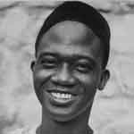

Launched in the summer of 2016, De Woof is a young and independent digital design studio and type foundry located in Calgary, Alberta. The company was founded by an international group of veteran designers hailing from Amsterdam, Paris, and Montreal.
With a combined 10+ years of design experience, these designers have come together to pool their varied skills and abilities in order to create a forward-thinking team of artists, marketers, and technicians.
De Woof specializes in providing custom typefaces made from earnest research and well-planned engineering. These typefaces conform to current technological and societal standards while also adhering to the tried-and-true practices of the past.
Our Work Process
Having a unique typographic voice is critical for withstanding the fickle trends of culture and society. By tailoring typefaces and lettering to embody contemporary needs, we are able to build brands that are appealing, memorable, and positive.
From planning to completion, our projects follow a comprehensive workflow. First, we evaluate the past, present, and future by assessing market and competitor behaviour, listening to customers’ opinions, and understanding your company’s vision of the future.
Based on the results, we then lay the framework for creating durable and effective tools that could be used effortlessly by your people and understood easily by your customers.
Our Vision and Purpose
"To provide beauty through utility, success through simplicity."
We aim to give expression to brands we create. We aim to provide appeal by way of functional design. We advocate, elaborate, and illuminate on thoughts and ideas through nothing more than the use of sequential lines and curves.
Our Values
We follow a holistic approach when it comes to making our wares. When designing, we consider our own experiences not just as designers, but also as regular everyday people making their way through this world, living, feeling, and experiencing everything that technology, nature, and society have to offer.
Our creations adhere to a simple core of values that go hand in hand with our own commitments and beliefs.
CONTEMPORARY, COHESIVE, DURABLE
A commitment to innovation and excellence
SYMMETRICAL, STYLISH, UMISTAKABLE
A commitment to advancing beauty with type
EXPRESSIVE, EFFECTIVE, UNIFYING
A commitment to working together and uniting people across borders
Our Team
Diederik Jannsen

Chief Executive Officer & Senior Designer
Diederik is a Dutch-Canadian that holds a Master of Arts from the Royal Academy of Art, The Hague and a degree from the Emily Carr University of Art and Design, Vancouver. Five years ago, he established Great Dane Studios, which has since grown and been re-launched into De Woof. He is an avid outdoorsman who particularly enjoys disappearing into the Canadian wilderness for weeks on end.
Claire Lane
Director of Font Technology and Licensing
Claire is a Calgary native that received her MA in Typeface Design from the Zurich University of the Arts, Zurich. She is a part-time lecturer, occasional jurist for the Canadian Type Design Competition, and curator for the Calgary Type Directors Foundation. In her free time, she enjoys yoga, cooking, and taking pictures of her cat.